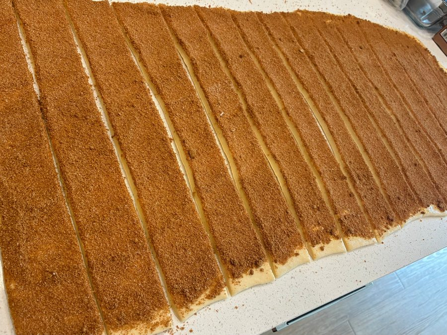
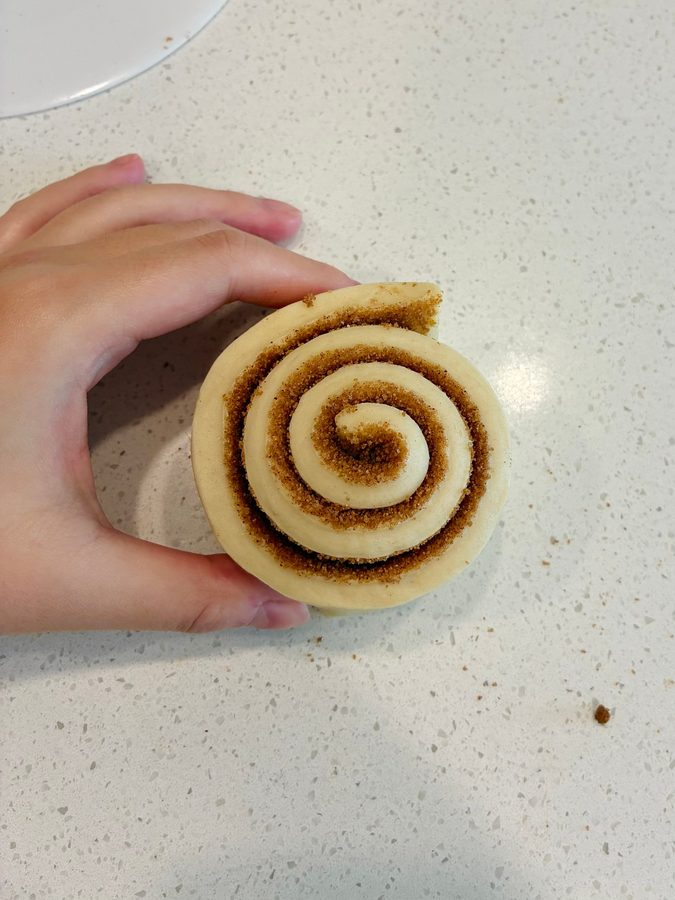
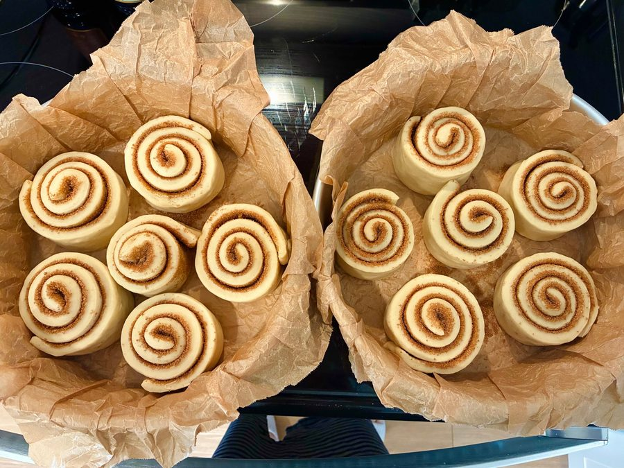
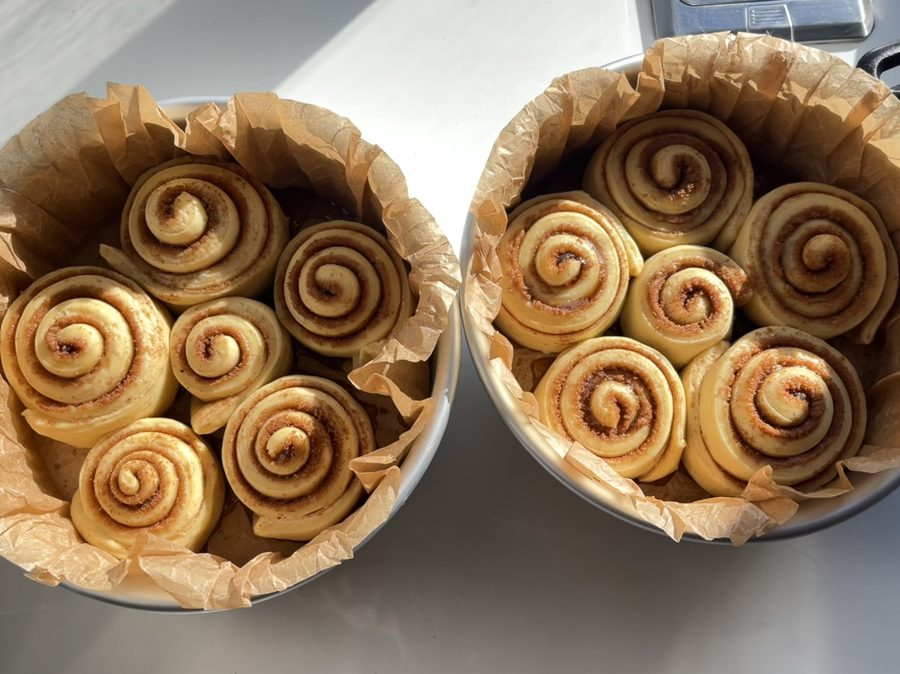

Make the dough
-
Mix
Combine everything for the dough except the butter and salt: cold milk, sourdough discard, yeast, sugar, egg, and bread flour. Mix until no dry flour remains.
-
Knead in butter and salt
Knead until the dough forms a rough film when stretched. Add the butter and salt and keep kneading until the dough is smooth and stretchy.
-
First rise
Cover the dough and let it rise somewhere warm until about doubled. Make the filling while you wait.
About 1–2 hr
Fill and shape
-
Mix the filling
Stir the softened butter with the brown sugar, cinnamon, and flour or cornstarch until smooth.
Why the flour? A little flour or cornstarch keeps the filling from oozing out as the rolls bake. -
Roll out and fill
Lightly dust the counter and the dough with flour. Roll the dough into a large rectangle, about 16 × 12 inches. Spread the filling evenly all the way to the edges.
-

Cut, then roll up
Trim off the uneven edges with a pizza cutter, then cut the sheet into 9 strips of about 110–115 g each. Roll up each strip into a spiral.
Cut first, roll second. Cutting strips before rolling gives every roll clean, even sides, without the squashed edges you get from slicing a log.
-

Pan and final proof
Arrange the rolls spiral side up in a parchment-lined pan. Cover and let them rise until puffy, about doubled, and just touching each other. Preheat the oven to 350°F toward the end.
About 1 hr
Bake
-

Drizzle and bake
Just before baking, drizzle a little heavy cream over each roll, just under 1 tablespoon each. Bake at 350°F until the tops are light golden.
Stop at light golden. If the rolls brown all over, they’ll be dry. Pale gold on top means soft and tender inside.About 25 min at 350°F -
Cool and top
Let the rolls cool for a few minutes, then add your topping.
Vanilla icing: whisk the sifted powdered sugar, milk or cream, and vanilla until smooth, then drizzle over the rolls. Start with 3 tablespoons of liquid and add more for a thinner icing.
Cream cheese frosting: beat the cream cheese and butter until smooth, then beat in the powdered sugar and vanilla until creamy. Spread over the warm rolls.